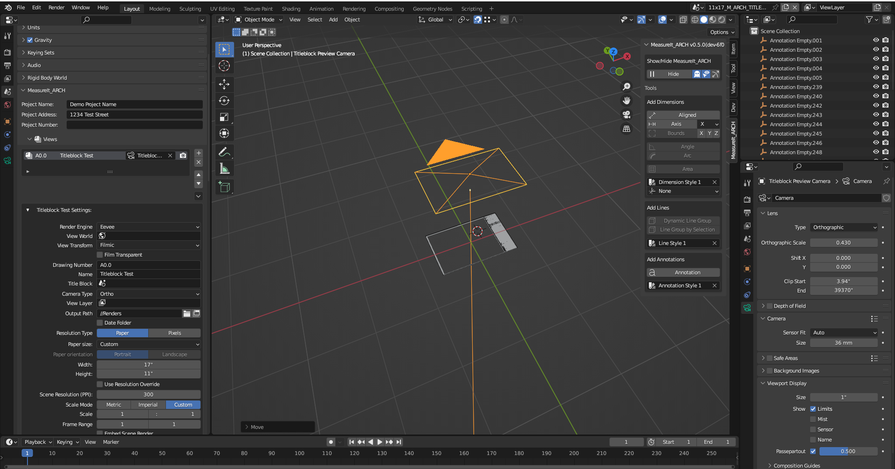

Set up a Titleblock
Download The Titleblock Demo File
What is a Titleblock?
Titleblocks can be used to set common elements that are present in multiple views. Typically Titleblocks contain a page border, project name, revision history, and other relevent information, as well as the designers information.
How do MeasureIt_ARCH Titleblocks Work?
MeasureIt_ARCH Titleblocks are defined in a titleblock scene (a new Blender scene that only contains the titleblock).
Once a Titleblock has been defined, any view in the main scene can reference the Titleblock scene (set in the views Titleblock property) and will draw that Titleblock scene in the Views Camera Space.
A MeasureIt_ARCH Titleblock can contain any MeasureIt_ARCH element, but Annotations with AutoFill Text setup can be particularly usefull. With AutoFill Text, the same titleblock can be used for many views, but text for view specific properties (Drawing Number, Drawing Name, Scale etc.) will be automattically updated to be correct for the current view.
Creating a Titleblock in MeasureIt_ARCH
To set up a titleblock in MeasureIt_ARCH, create a new scene, and name it somthing recongnizable and descriptive.
Note
Titleblocks ususally correspond to a particular designer and page size, it's helpful to indicate both of these in the Scene name, so it can be easily located later
In the titleblock scene, draw your titleblock using MeasureIt_ARCH Element. The titleblock must be drawn at 1:1 Scale, on the XY plane centered at the scene origin, to work correctly.
It's not necessary, but it can be helpful to create a View with a down facing camera in the titleblock scene, with the Paper Size and 1:1 Scale set so you can preview your titleblock from this camera view.
